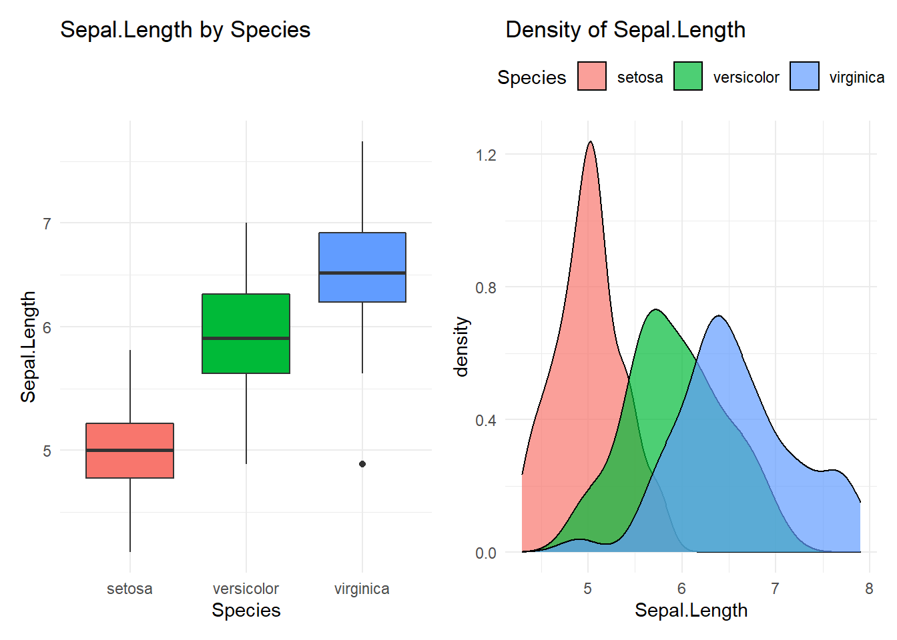
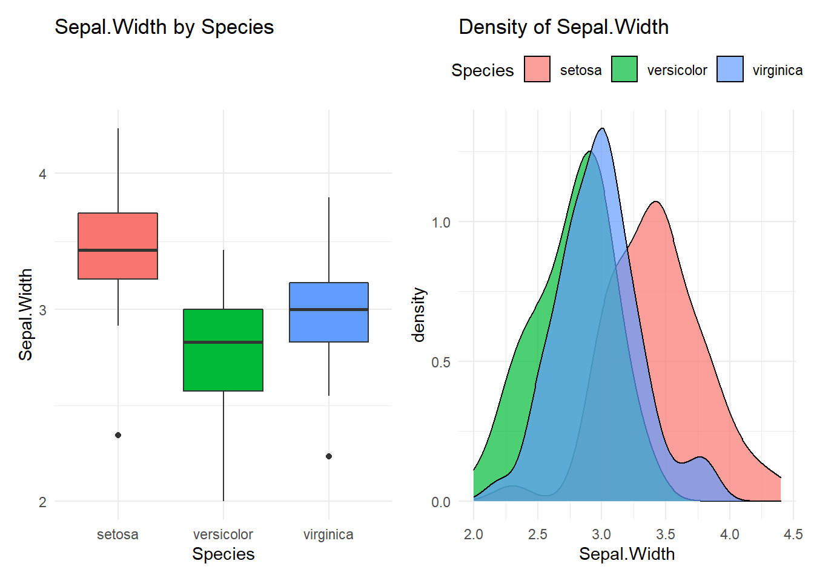
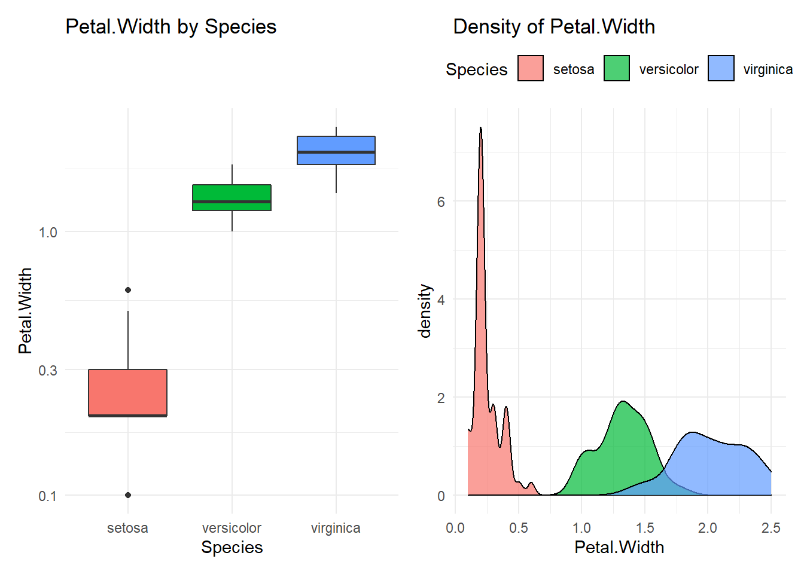
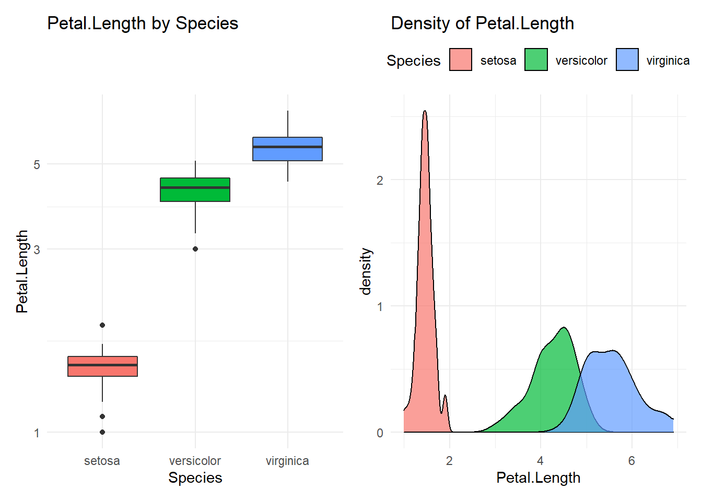

Automating Data Exploratory Analysis with purrr and NSE
In the life of an analyst, one have to spend much time on data exploratory analysis. When you have to repeat the task multiple times, you might need to write a function. For example, I often need to do an analysis between a numeric variable and a factor variable in the following process:
- Compare statistics among groups (
mean,median,…) - Make an ANOVA model to compare
meanamong groups - Draw some chart to vizualize difference among groups
To solve this problem, I create a function called compare_group as follows:
library(tidyverse)
library(patchwork)
compare_group <- function(data,
value,
group){
value <- enquo(value)
group <- enquo(group)
value_name <- quo_name(value)
group_name <- quo_name(group)
cat(paste0("Compare ", value_name, " with ", group_name))
cat("\n----------------------------------------\n")
#Compare two variable
df <- data %>% select(!!value, !!group)
df %>%
group_by(!!group) %>%
summarise_at(vars(!!value),
funs(n(), mean, median,
min,
q25 = quantile(., 0.25),
q75 = quantile(.,0.75),
p90 = quantile(., 0.9),
q95 = quantile(., .95),
max)) %>% print
formula.aov <- paste(value_name, group_name, sep = "~")
cat("\n----------------------------------------")
cat(paste0("\n# Anova analysis: ", formula.aov))
cat("\n----------------------------------------\n\n")
aov(formula(formula.aov), data = df) %>% TukeyHSD() %>% print;
p1 <- ggplot(data, aes(!!group, !!value, fill = !!group)) +
geom_boxplot(aes(fill = !!group)) +
scale_y_log10() +
labs(title = paste0(value_name, " by ", group_name)) +
theme_minimal() +
theme(legend.position = "none");
# p1 %>% print();
p2 <- ggplot(data, aes(!!value)) +
geom_density(aes(fill = !!group), alpha = 0.7) +
labs(title = paste0("Density of ", value_name)) +
theme_minimal() +
theme(legend.position = "top");
# p2 %>% print();
print(p1+p2)
}Let’s have a quick test.
iris %>% compare_group(Sepal.Length, Species)## Compare Sepal.Length with Species
## ----------------------------------------
## # A tibble: 3 x 10
## Species n mean median min q25 q75 p90 q95 max
## <fct> <int> <dbl> <dbl> <dbl> <dbl> <dbl> <dbl> <dbl> <dbl>
## 1 setosa 50 5.01 5 4.3 4.8 5.2 5.41 5.61 5.8
## 2 versicolor 50 5.94 5.9 4.9 5.6 6.3 6.7 6.76 7
## 3 virginica 50 6.59 6.5 4.9 6.22 6.9 7.61 7.7 7.9
##
## ----------------------------------------
## # Anova analysis: Sepal.Length~Species
## ----------------------------------------
##
## Tukey multiple comparisons of means
## 95% family-wise confidence level
##
## Fit: aov(formula = formula(formula.aov), data = df)
##
## $Species
## diff lwr upr p adj
## versicolor-setosa 0.930 0.6862273 1.1737727 0
## virginica-setosa 1.582 1.3382273 1.8257727 0
## virginica-versicolor 0.652 0.4082273 0.8957727 0
The above solution has saved me hours and release my time to focus on reading and making sense of result. However, if you want to analyze multiple numeric variables with one category variable, the traditional approches are somewhat cubersome.
Ilustrative example: For all numeric variables in dataset iris, make an analysis to analysis this variable with Species.
library(tidyverse)
iris %>% head## Sepal.Length Sepal.Width Petal.Length Petal.Width Species
## 1 5.1 3.5 1.4 0.2 setosa
## 2 4.9 3.0 1.4 0.2 setosa
## 3 4.7 3.2 1.3 0.2 setosa
## 4 4.6 3.1 1.5 0.2 setosa
## 5 5.0 3.6 1.4 0.2 setosa
## 6 5.4 3.9 1.7 0.4 setosaThe traditinal ways to do the task are to follow 2 approaches:
- Make analysis for every variables without loop. For example:
compare_group(Sepal.Length, Species)and repeat it for each & every variable. - Make a
for loopto run a loop for analysis. However, this approach has some limitation, especially in readability in coding & diffculty in programming.
To overcome this diffculty, you can use map in purrr and modify some part of compare_group function. The strategy is as follows.
- Step 1: Modify the
compare_groupfunction to fix data and group variable for analysis - Step 2: Map all numeric variables to the new function.
Let see the example below.
Step 1: Modify function
# Step 1: Create the function
my_stat <- function(x){
x <- enquo(x)
iris %>%
compare_group(!!x, Species)
}
# Test the function
my_stat(Sepal.Length)## Compare Sepal.Length with Species
## ----------------------------------------
## # A tibble: 3 x 10
## Species n mean median min q25 q75 p90 q95 max
## <fct> <int> <dbl> <dbl> <dbl> <dbl> <dbl> <dbl> <dbl> <dbl>
## 1 setosa 50 5.01 5 4.3 4.8 5.2 5.41 5.61 5.8
## 2 versicolor 50 5.94 5.9 4.9 5.6 6.3 6.7 6.76 7
## 3 virginica 50 6.59 6.5 4.9 6.22 6.9 7.61 7.7 7.9
##
## ----------------------------------------
## # Anova analysis: Sepal.Length~Species
## ----------------------------------------
##
## Tukey multiple comparisons of means
## 95% family-wise confidence level
##
## Fit: aov(formula = formula(formula.aov), data = df)
##
## $Species
## diff lwr upr p adj
## versicolor-setosa 0.930 0.6862273 1.1737727 0
## virginica-setosa 1.582 1.3382273 1.8257727 0
## virginica-versicolor 0.652 0.4082273 0.8957727 0
Step 2: Using map to automate analysis
# Step 2: Apply map for the new function
library(purrr)
iris %>%
select_if(is.numeric) %>%
names %>%
syms %>%
map(my_stat)## Compare Sepal.Length with Species
## ----------------------------------------
## # A tibble: 3 x 10
## Species n mean median min q25 q75 p90 q95 max
## <fct> <int> <dbl> <dbl> <dbl> <dbl> <dbl> <dbl> <dbl> <dbl>
## 1 setosa 50 5.01 5 4.3 4.8 5.2 5.41 5.61 5.8
## 2 versicolor 50 5.94 5.9 4.9 5.6 6.3 6.7 6.76 7
## 3 virginica 50 6.59 6.5 4.9 6.22 6.9 7.61 7.7 7.9
##
## ----------------------------------------
## # Anova analysis: Sepal.Length~Species
## ----------------------------------------
##
## Tukey multiple comparisons of means
## 95% family-wise confidence level
##
## Fit: aov(formula = formula(formula.aov), data = df)
##
## $Species
## diff lwr upr p adj
## versicolor-setosa 0.930 0.6862273 1.1737727 0
## virginica-setosa 1.582 1.3382273 1.8257727 0
## virginica-versicolor 0.652 0.4082273 0.8957727 0
## Compare Sepal.Width with Species
## ----------------------------------------
## # A tibble: 3 x 10
## Species n mean median min q25 q75 p90 q95 max
## <fct> <int> <dbl> <dbl> <dbl> <dbl> <dbl> <dbl> <dbl> <dbl>
## 1 setosa 50 3.43 3.4 2.3 3.2 3.68 3.9 4.06 4.4
## 2 versicolor 50 2.77 2.8 2 2.52 3 3.11 3.2 3.4
## 3 virginica 50 2.97 3 2.2 2.8 3.18 3.31 3.51 3.8
##
## ----------------------------------------
## # Anova analysis: Sepal.Width~Species
## ----------------------------------------
##
## Tukey multiple comparisons of means
## 95% family-wise confidence level
##
## Fit: aov(formula = formula(formula.aov), data = df)
##
## $Species
## diff lwr upr p adj
## versicolor-setosa -0.658 -0.81885528 -0.4971447 0.0000000
## virginica-setosa -0.454 -0.61485528 -0.2931447 0.0000000
## virginica-versicolor 0.204 0.04314472 0.3648553 0.0087802
## Compare Petal.Length with Species
## ----------------------------------------
## # A tibble: 3 x 10
## Species n mean median min q25 q75 p90 q95 max
## <fct> <int> <dbl> <dbl> <dbl> <dbl> <dbl> <dbl> <dbl> <dbl>
## 1 setosa 50 1.46 1.5 1 1.4 1.58 1.7 1.7 1.9
## 2 versicolor 50 4.26 4.35 3 4 4.6 4.8 4.9 5.1
## 3 virginica 50 5.55 5.55 4.5 5.1 5.88 6.31 6.65 6.9
##
## ----------------------------------------
## # Anova analysis: Petal.Length~Species
## ----------------------------------------
##
## Tukey multiple comparisons of means
## 95% family-wise confidence level
##
## Fit: aov(formula = formula(formula.aov), data = df)
##
## $Species
## diff lwr upr p adj
## versicolor-setosa 2.798 2.59422 3.00178 0
## virginica-setosa 4.090 3.88622 4.29378 0
## virginica-versicolor 1.292 1.08822 1.49578 0
## Compare Petal.Width with Species
## ----------------------------------------
## # A tibble: 3 x 10
## Species n mean median min q25 q75 p90 q95 max
## <fct> <int> <dbl> <dbl> <dbl> <dbl> <dbl> <dbl> <dbl> <dbl>
## 1 setosa 50 0.246 0.2 0.1 0.2 0.3 0.4 0.4 0.6
## 2 versicolor 50 1.33 1.3 1 1.2 1.5 1.51 1.6 1.8
## 3 virginica 50 2.03 2 1.4 1.8 2.3 2.4 2.45 2.5
##
## ----------------------------------------
## # Anova analysis: Petal.Width~Species
## ----------------------------------------
##
## Tukey multiple comparisons of means
## 95% family-wise confidence level
##
## Fit: aov(formula = formula(formula.aov), data = df)
##
## $Species
## diff lwr upr p adj
## versicolor-setosa 1.08 0.9830903 1.1769097 0
## virginica-setosa 1.78 1.6830903 1.8769097 0
## virginica-versicolor 0.70 0.6030903 0.7969097 0
## [[1]]
##
## [[2]]
##
## [[3]]
##
## [[4]]
The trick here is to use syms to combine the power of nonstandard evaluation and map in purrr. The power of functional programming & non-standard evaluation in tidyverse is incredible. This approach could help one release much time of programming and focus and results & insights.